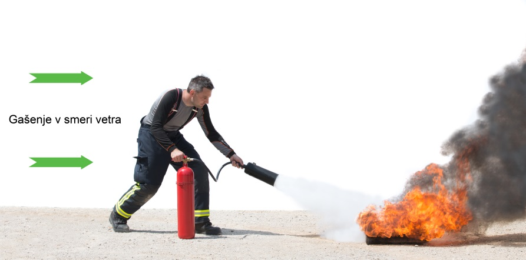

GAŠENJE Z GASILNIKOM
ČE PRESODIMO, DA SMO POŽARU KOS, IZBEREMO USTREZEN GASILNIK IN SE POŽARU PRIBLIŽAMO V SMERI VETRA. PRIPOROČLJIVO JE, DA SI ZA GAŠENJE PRIPRAVIMO VSAJ DVA GASILNIKA, SAJ LAHKO KAKŠEN OD GASILNIKOV TUDI ZATAJI.
PRED GAŠENJEM SNAMEMO GASILNIK S PODSTAVKA, PREGLEDAMO NAVODILA ZA UPORABO, IZVLEČEMO VAROVALKO IN RAZMISLIMO O MOREBITNI SMERI UMIKA, ČE GAŠENJE NE BO USPEŠNO.
ZA ZAČETEK GAŠENJA GASILNIK NAJPREJ AKTIVIRAMO (IZVLEČEMO VAROVALKO IN PRITISNEMO VZVOD) IN USMERIMO ROČNIK GASILNIKA V OGENJ. PRI GAŠENJU Z GASILNIKOM NA PRAŠEK ALI PLINASTA GASILA BOMO NAJUSPEŠNEJŠI, ČE BOMO ROČNIK GASILNIKA USMERILI V PLAMEN IN GA POMIKALI CIK CAK (LEVO IN DESNO, GOR IN DOL) PO PLAMENU. KO SE PLAMEN NEKOLIKO ZMANJŠA, ROČNIK PAZLJIVO USMERIMO TUDI V GORLJIVO SNOV.

SLIKA 5: Z GASILNIKOM VEDNO GASIMO V SMERI VETRA!
Z GASILNIKOM VEDNO GASIMO V SMERI VETRA!
DOLOČITEV GLEDE ŠTEVILA IN VRSTE GASILNIKA
PRAVILA GLEDE GASILNIKOV SO PODANA V PRAVILNIKU O IZBORU IN NAMESTITVI ROČNIH GASILNIH APARATOV (UR.L. RS, ŠT. 67/2005). S PRAVILNIKOM SE DOLOČAJO MERILA ZA IZBIRO IN NAMESTITEV GASILNIH APARATOV ZA ZAČETNO GAŠENJE POŽAROV KOT OBVEZNE OPREME STAVB GLEDE NA POŽARNO NEVARNOST IN POVRŠINO. PRAVILNIK PODAJA PREKO PRILOG TUDI ZAHTEVE ZA DOLOČITEV ŠTEVILA GASILNIKOV OZ. TI. ENOT GASILA (EGGS). ENOTA GASILA JE GASILNA UČINKOVITOST GASILNEGA MEDIJA V GASILNIKU. DOLOČAJO JO S POMOČJO POŽARNIH PREIZKUSOV, KI JIH OPREDELJUJE STANDARD SIST EN 3 – 7: PRENOSNI GASILNIKI - 7. DEL: LASTNOSTI, ZAHTEVE ZA OBNAŠANJE V UPORABI IN PRESKUSNE METODE.
PREDLOG NAMESTITVE GASILNIKOV V DOMAČEM OKOLJU:
- NAJMANJ EN GASILNIK NA PRAŠEK ABC Z 6 EG (SMISELNA JE TUDI NAMESTITEV NAJMANJ ENEGA GASILNIKA NA VODO ALI PENO), PRIPOROČENO TUDI VSAJ 1 GASILNIK NA CO2
- GOSPODARSKO POSLOPJE – VSAJ 1 GASILNIK NA PRAŠEK ABC Z 6 EG
- VIKEND – VSAJ 1 GASILNIK NA PRAŠEK ABC Z 6 EG
- KURILNICA, GARAŽA ALI MANJŠA DELAVNICA – VSAJ 1 GASILNIK NA PRAŠEK ABC Z 6 EG
- NAJMANJ EN GASILNIK NA PRAŠEK ABC Z 4 EG V OSEBNI AVTOMOBIL (ZA TOVORNA VOZILA VELJAJO POSEBNE ZAHTEVE)
PRI IZBIRI ZA DOMA PRIMERNEGA GASILNIKA LAHKO PRED NAKUPOM SVETUJEJO GASILCI, PRODAJALCI ALI PROIZVAJALCI.
GASILNIK NAJ BO NAMEŠČEN NA VIDNEM IN DOSTOPNEM MESTU V BLIŽINI IZHODNIH VRAT.